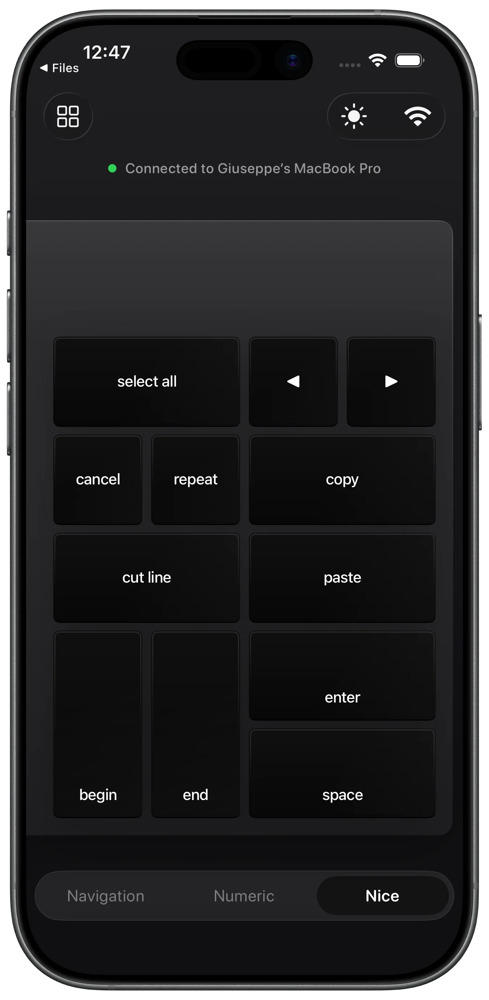
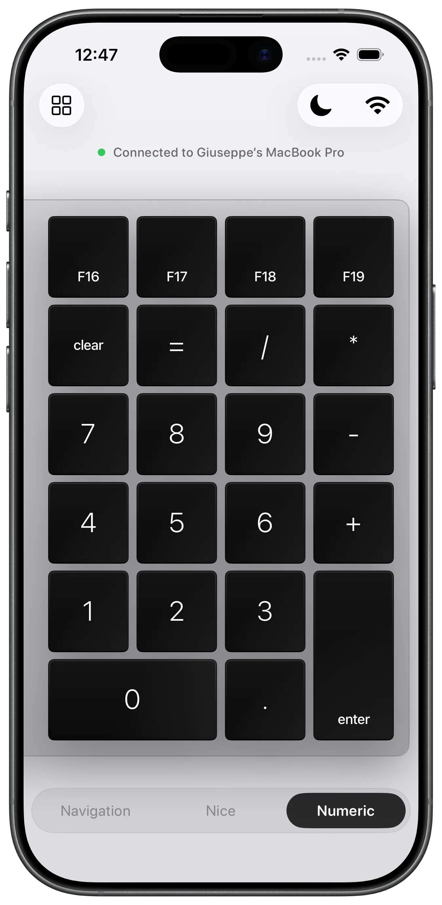
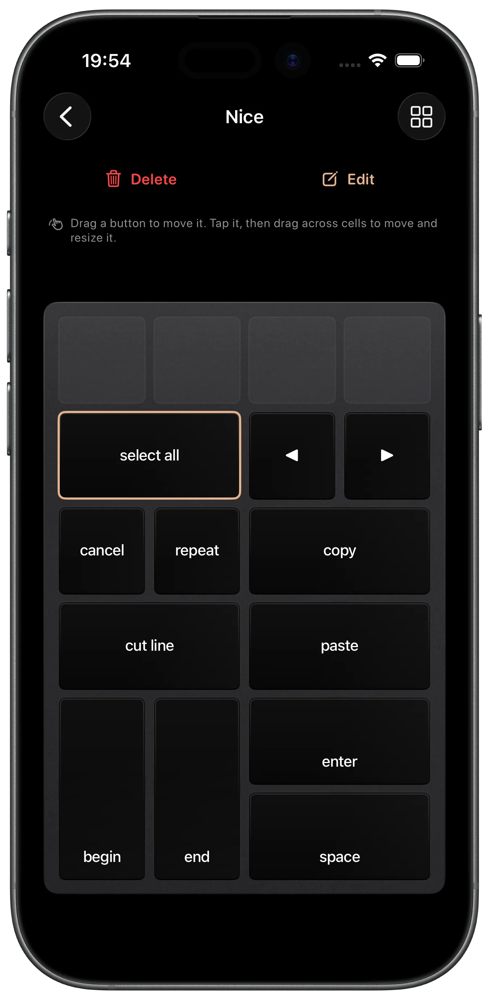

Fully Custom Layouts
Drag, resize, and edit any key. Mix numbers, navigation, punctuation, letters, and combinations into layouts that match how you work.
The custom keypad for Mac. Turn your iPhone into a wireless numeric keypad, navigation pad, and macro pad you can shape to fit your workflow — numbers, arrows, shortcuts, anything you want.



Drag, resize, and edit any key. Mix numbers, navigation, punctuation, letters, and combinations into layouts that match how you work.
Connects to your Mac over your local network. No cables, no adapters, no hassle — the Mac companion app is bundled with Padme and AirDroppable right from your iPhone.
Create and import as many custom keypads as you want. Numeric pad today, editing shortcuts tomorrow — switch instantly between your layouts.
There's nothing to download separately. The Padme Companion app for Mac is bundled inside the iOS app and can be AirDropped directly to your Mac from within Padme on your iPhone.
No. Padme connects to your Mac wirelessly over your local Wi-Fi network. No cables, dongles, or adapters required.
Yes. Padme lets you build unlimited custom keypads. Drag, resize, and edit individual keys, and mix numbers, navigation, punctuation, letters, and key combinations into layouts that fit your workflow.
Padme turns your iPhone into a wireless numeric keypad, navigation pad, and macro pad for your Mac — great for data entry, editing shortcuts, cursor navigation, or any custom key layout you need.
We'd love to hear from you.